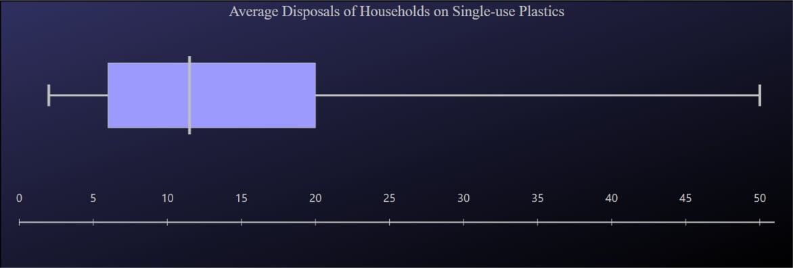
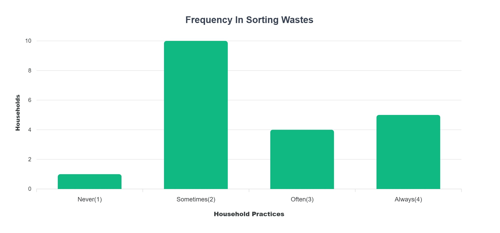
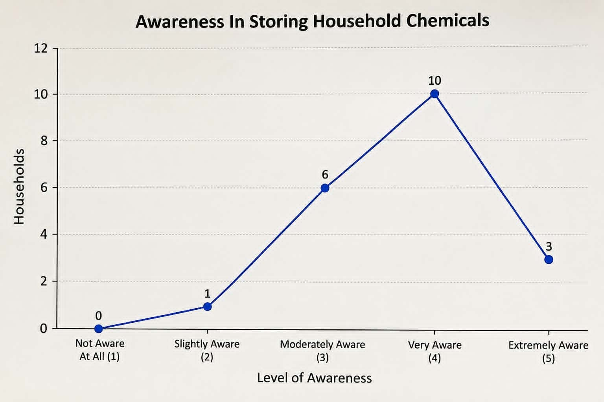

Pick a subject to open its letter
Dear Ms. Lumba, — Math
Question 1

🔍- Minimum2
- Q16
- Median13
- Q320
- Maximum50
The box plot shows a right-skewed distribution, which means that most households throw away a low to moderate amount of single-use plastics, while a smaller number of households throw away much more. The median is 13 disposals, while the middle 50% of households have about 6 to 20 disposals. However, some households reach as high as 50 disposals, showing a big difference between households. This suggests that while most households do not throw away extremely large amounts of plastic, a small group contributes a large amount of plastic waste. The action plan should focus on households with high plastic disposal while encouraging everyone to reduce their use of single-use plastics.
Question 2

🔍The bar graph shows that most households do not sort their waste regularly. 10 out of 20 households (50%) sort their waste Sometimes, making it the most common response. Meanwhile, 5 households (25%) Always sort their waste, 4 households (20%) do so Often, and 1 household (5%) Never sorts waste. Although many households practice waste sorting, half of them only do it sometimes. This shows that waste sorting is not yet a regular habit for most households. The action plan should encourage households to sort their waste more regularly and make proper waste segregation a daily practice.
Question 3

🔍The graph shows that most households are aware of how to safely store household chemicals. 10 out of 20 households (50%) are Very Aware, while 3 households (15%) are Extremely Aware. Another 6 households (30%) are Moderately Aware, while only 1 household (5%) is Slightly Aware, and no household is Not Aware At All. This means that 65% of households have a high level of awareness about proper chemical storage. However, some households still need more information to make sure they know how to store chemicals safely. The action plan should continue improving awareness, especially among households with lower levels of awareness.
- Group Four
MEMBER OF GROUP FOUR
Members of Group 4:
- Asher Megallon Leader, and Output Maker
- Jaydee Canlas Resource Provider, and Researcher
- Mark MarceloLead Programmer, Survey Organizer
- Sama Ibrahim Script Writer, and Output Maker
- Erica Zara Scriptwriter and Designer
- Felisity HipolitoDesigner
- Vince EliangResearcher, Survey Distributer
- Group Four

Dear reader,
Dear reader, this is group 4's final output for the interdisciplinary PETA, feel free to access our outputs that are easily accessible( ＾ω＾ )
— Group Four
🐰